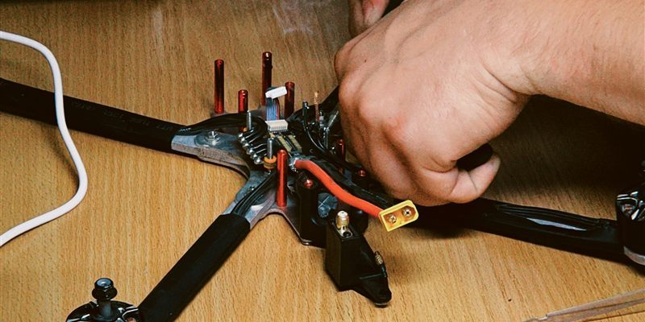

Itse rakentaminen
Tähän tulee myöhemmin kuvaus droonin kasaamisesta ja siihen tarvittavista työkaluista ja taidoista.
Valmis BNF-drooni
Tähän tulee myöhemmin kuvaus valmiista Bind-N-Fly-drooneista.
Vertailu
Tähän tulee myöhemmin taulukko, jossa vertaillaan kasaamisen ja ostamisen hintoja.
Merkkejä
Tähän tulee myöhemmin lista drone-merkeistä linkkeineen.